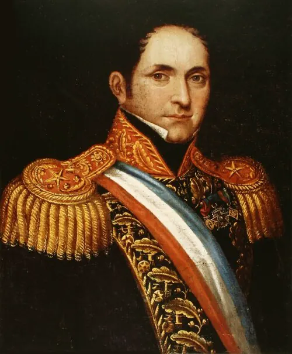

Batalla de Lircay

La Constitución liberal de 1828 no logró dar estabilidad al país. En las elecciones de 1829, el Congreso designó como vicepresidente a un candidato liberal que había obtenido menos votos que otros, lo que los conservadores denunciaron como ilegal. Pelucones, estanqueros liderados por Diego Portales y o'higginistas se unieron, y el ejército del sur, al mando del general Joaquín Prieto, marchó sobre Santiago. Tras meses de enfrentamientos y negociaciones, el 17 de abril de 1830 las fuerzas de Prieto, entre cuyos oficiales estaba Manuel Bulnes, derrotaron a las tropas liberales de Ramón Freire a orillas del río Lircay, cerca de Talca.
La victoria dio inicio a la hegemonía conservadora. Portales, ministro desde 1830, impulsó un gobierno fuerte y centralizado, con orden público, disciplina militar y sanciones a los vencidos, que luego se plasmó en la Constitución de 1833. Prieto fue elegido presidente en 1831 y comenzó la República Conservadora. Para algunos historiadores, Lircay puso fin a la "anarquía" y permitió una estabilidad excepcional en la región; otros subrayan que esa estabilidad se construyó sobre la exclusión de los liberales y el autoritarismo.
Versión para niños
Después de la independencia, los chilenos no se ponían de acuerdo sobre cómo gobernar. Había dos grandes grupos: los pipiolos, más liberales, y los pelucones, más conservadores. En 1829 la discusión se transformó en una guerra entre chilenos. El 17 de abril de 1830, cerca de Talca, junto al río Lircay, los pelucones vencieron al ejército de Ramón Freire. Desde entonces, los conservadores gobernaron Chile durante unos treinta años.
Para maestros
Nivel sugerido: 1° medio
Objetivo: Analizar el conflicto entre proyectos políticos durante la organización de la república y evaluar las consecuencias de la batalla de Lircay en la construcción del Estado.
Preguntas para la clase:
- ¿Qué diferenciaba el proyecto de los pipiolos del de los pelucones?
- ¿Por qué una guerra civil terminó definiendo el tipo de Estado que tendría Chile?
- ¿Es posible lograr estabilidad política sin excluir a quienes piensan distinto?
Actividad (20–30 min): En grupos, los estudiantes comparan dos interpretaciones historiográficas del periodo 1823–1830, la de la "anarquía" y la de los "ensayos constitucionales", a partir de extractos breves seleccionados por el docente, y elaboran un cuadro con los argumentos de cada una.
Fuentes sugeridas: Memoria Chilena; Biblioteca del Congreso Nacional (BCN); Biblioteca Nacional Digital; Museo Histórico Nacional.
Objetivos de Aprendizaje (Currículum Nacional)
- 6° básico · HI06 OA 03 Describir algunos hitos y procesos de la organización de la república … el surgimiento de grupos con diferentes ideas políticas (conservadores y liberales)
- 8° básico · HI08 OA 19 Evaluar las principales transformaciones y desafíos que generó la independencia de Chile, como la conformación de un orden republicano
- 1° medio · HI1M OA 08 Analizar el periodo de formación de la República de Chile como un proceso que implicó el enfrentamiento de distintas visiones
Personajes
Revisión humana pendiente. Cómo se revisa · Reportar un error
Cómo citar: Historia de Chile. (2026). Batalla de Lircay. En Historia de Chile: atlas y línea de tiempo. https://moises-salgado.github.io/historia-de-chile/momento/batalla-de-lircay.html